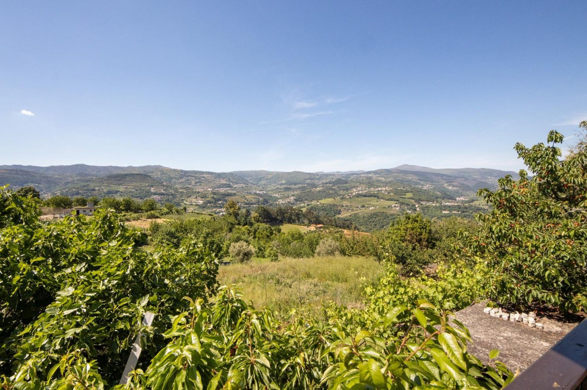
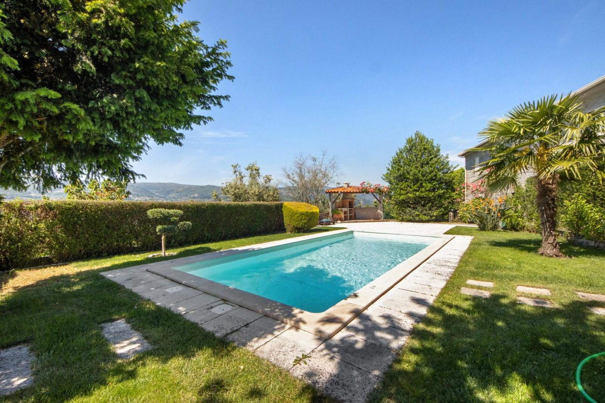
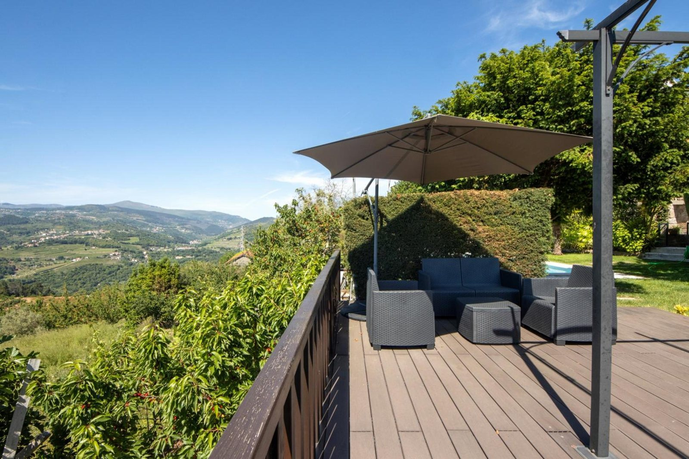
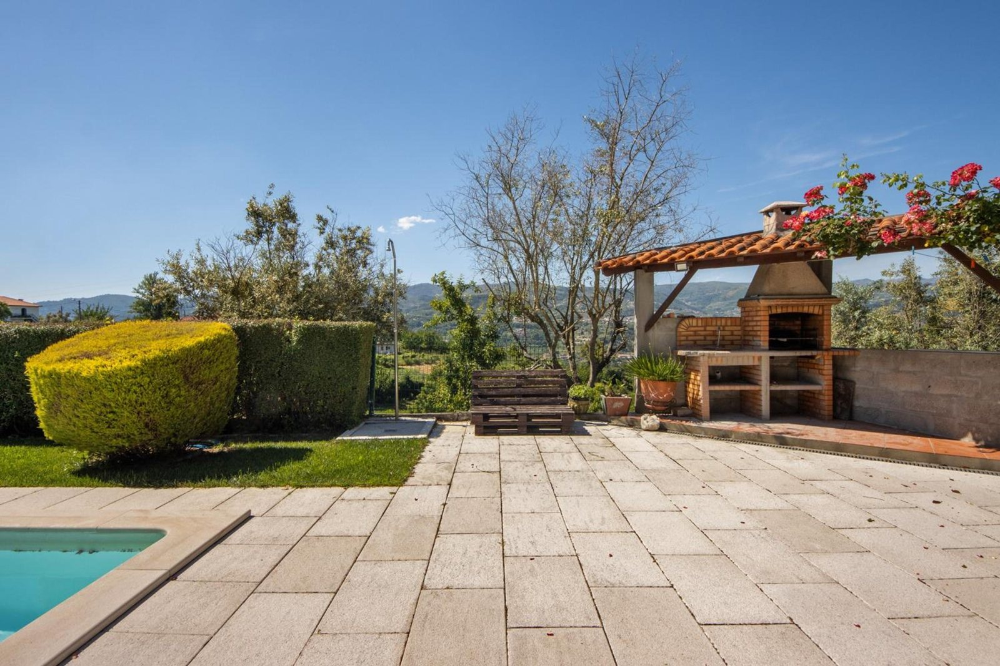
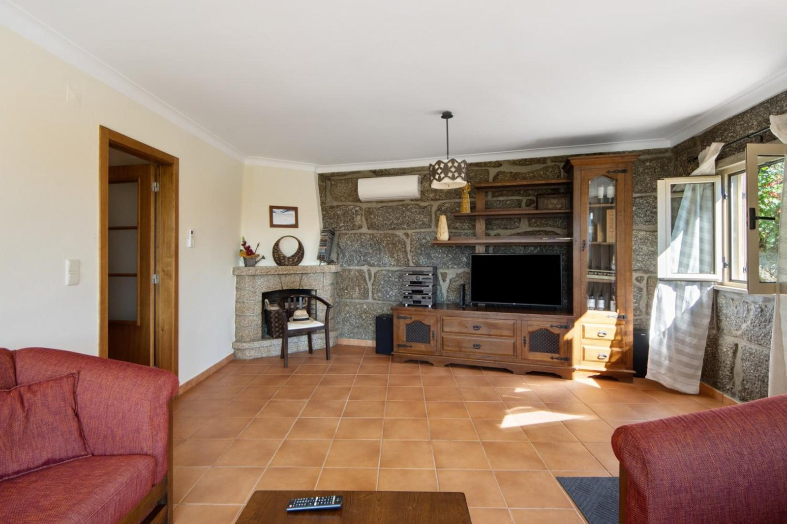
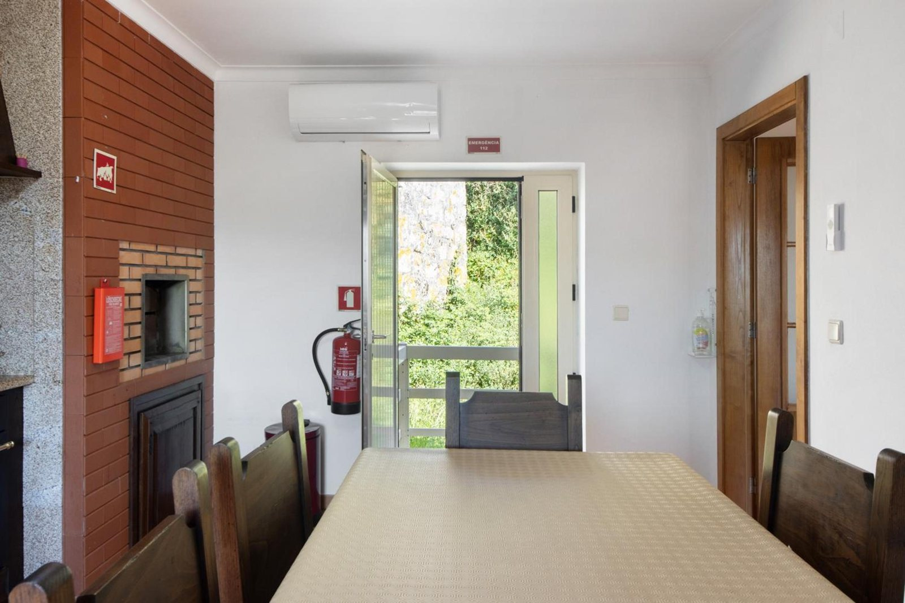
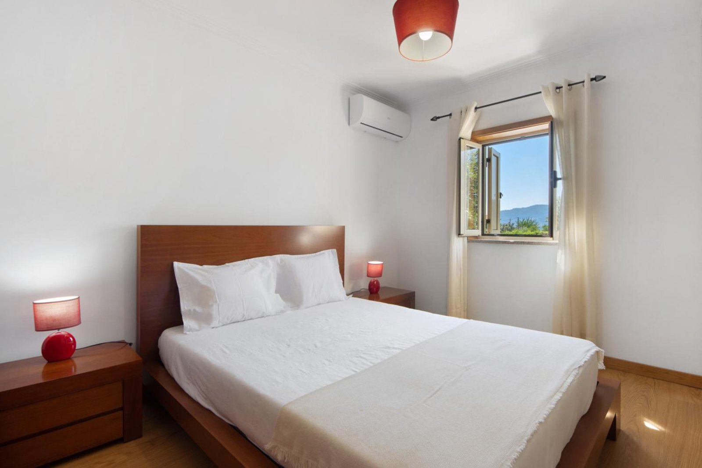
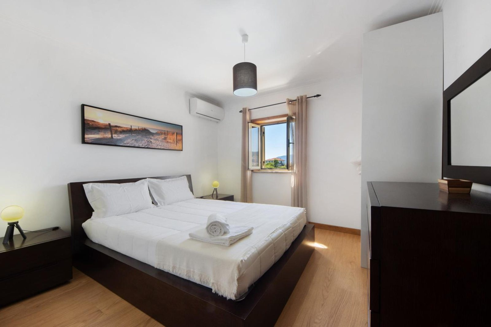
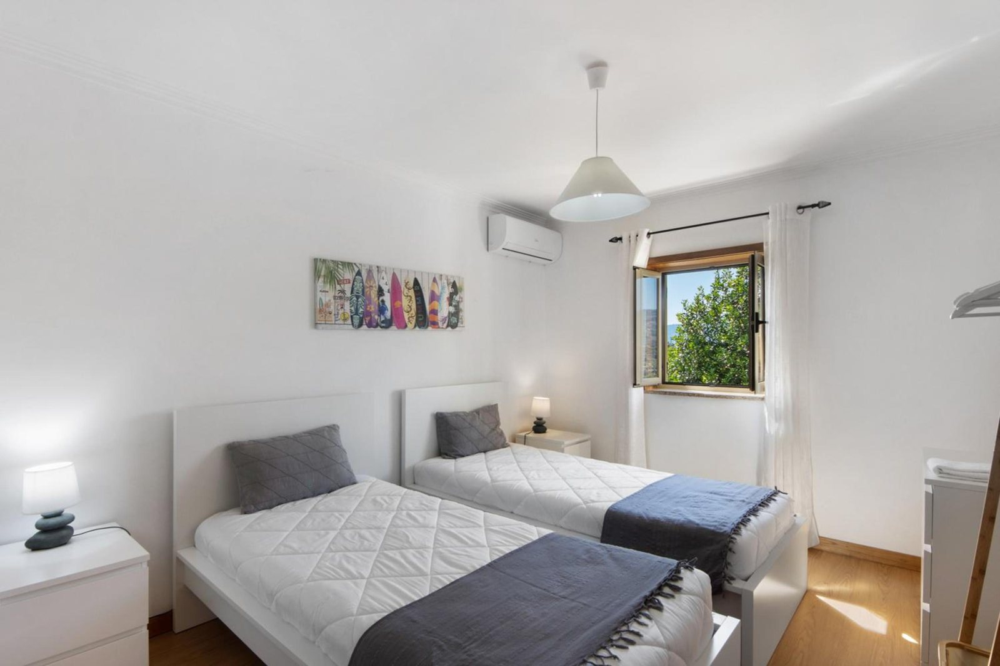

O vale e as serrasVista aberta sobre o vale, as encostas e as serras em redor.
"Das Haus ist toll gelegen mit fantastischem Ausblick und tolle Gärten."
A casa está muito bem situada, com uma vista fantástica e jardins ótimos.
Anja · Booking
Piscina privada ao ar livre, rodeada de relva e com pátio de lajes.
No jardim, um deck de madeira com pérgola, virado ao vale.
Uma churrasqueira exterior coberta, junto ao pátio.

"the pool area was very beautiful with great views of the valley"
Richard · Booking

O deck"Espaço exterior com óptima paisagem e um deck muito bom para fazer refeições."
Nuno Besteiro · Google

"Churrasco foram feitos, banhos de sol tomados"
Helena Maria Sampaio De Castro Henriques · Google
"De tuin is mooi aangelegd met veel groen, ideaal om uren te zonnen of een goed boek te lezen."
O jardim está bem arranjado, com muito verde, ideal para apanhar sol horas a fio ou ler um bom livro.
Basma · Booking

Uma casa de granito, com as paredes de pedra à vista na sala e na cozinha, e um anexo de pedra antigo ao lado.
Na sala, uma lareira de pedra e uma janela grande sobre o vale.
A cozinha tem máquina de lavar loiça, forno, micro-ondas, torradeira, chaleira e máquina de café, e a mesa de refeições fica junto a uma churrasqueira interior de tijolo. Há Wi-Fi gratuito, ar condicionado, televisão e máquina de lavar roupa.
"Huis staat in orde zoals op de fotos, geen verborgen gebreken."
A casa está em ordem, tal como nas fotos, sem defeitos escondidos.
Kris Van de Spiegle · Google

A casa tem três quartos e uma casa de banho. Dois quartos com cama de casal e um quarto com duas camas individuais.
Roupa de cama e toalhas incluídas. Berço e cadeira alta de bebé gratuitos, mediante pedido.



"O proprietário Manuel é muito simpático e prestável. Orientou-nos no espaço, na vila e aconselhou-nos vários locais."
Catarina · Booking
"proprietário incrível e incansável na disponibilidade"
Luis · Booking
"Hier ben je echt op vakantie met een super vriendelijke gastheer die klaar staat om elk probleem op te lossen die er niet zijn"
Aqui está-se mesmo de férias, com um anfitrião super simpático, pronto a resolver qualquer problema que não existe.
Kris Van de Spiegle · Google
"Local calmo e bastante isolado mas simultaneamente muito próximo do centro de Resende e de fácil acesso."
Joana · Booking
"it was well located for wine tasting trips also close to grocery stores"
Richard · Booking
Reserva pelo Booking ou pelo Airbnb.
Para perguntas: telefone 911 505 394 e email wearecasadovalado@gmail.com.
Alojamento Local, modalidade Moradia, registo RNAL 88302/AL.